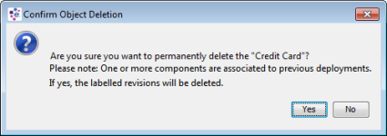

Deleting
Whenever there are any components that need to be deleted from the solution, the user will first need to move the selected component(s) to the Recycle Bin using the Move to Recycle Bin Wizard before permanently deleting them from the system. This two step process ensures that the user can restore recycled components from the Recycle Bin if required.
The following sections will guide the user through these steps, enabling components to be deleted.
When a component or folder needs to be removed from a Solution, the user can move the selected component(s) or folder(s) to the Recycle Bin before permanently deleting them. The system will automatically propose the dependent components that need to be moved to the Recycle Bin. This will be particularly useful when:
- a pre-configured solution for a client needs to be replaced with place holder of a real configuration
- creating and consuming reusable content
- existing components needs to be deleted due to drastic changes on the new version of components.
| Moving a component to the Recycle Bin will create a version history for the component. |
To move a component from a User or Shared domain to the Recycle Bin
- In the Explorer window, right click on the component that you want to move.
- Select Move to Recycle Bin.... The Move to Recycle Bin wizard appears.
- In the Component Chooser screen, the selected component is displayed for you to move to the Recycle Bin.
- If required, click on the Select column to select the dependent components that need to be moved to the Recycle Bin.
- Type a comment into the Comment field. This field is mandatory.
- Click on the Next button to continue to move the selected components to the Recycle Bin.
- In the Results screen, click on the Finish button to close the Move to Recycle Bin wizard.
The selected component(s) and its dependencies are moved to the Recycle Bin.
| An alternative method, to move component(s) to the Recycle Bin is to select a folder from the Explorer window, right click and select the Manage components option followed by Move to Recycle Bin. The Move to Recycle Bin wizard appears and the user is required to follow the same on-screen instructions as described above. The selected component(s) and its dependencies are moved to the Recycle Bin. |
To move a folder to the Recycle Bin
- In the Explorer window, right click on the folder that you want to move.
- Select Move to Recycle Bin....The Move to Recycle Bin wizard appears.
- In the Component Chooser screen, all of the component(s) and its dependencies in both the selected folder and its sub folders are displayed for you to move to the Recycle Bin.
- If required, click on the Select column to select other components that need to be moved to the Recycle Bin.
- Type a comment into the Comment field. This field is mandatory.
- Click on the Next button to continue to move the selected components to the Recycle Bin.
- In the Results screen, click on the Finish button to close the Move to Recycle Bin wizard.
All of the component(s) and its dependencies in both the selected folder and its sub folders are moved to the Recycle Bin.
| The drag and drop option can also be used to move a component or folder to the Recycle Bin. When this action is performed, the Move to Recycle Bin wizard appears and the user is required to follow the same on-screen instructions as described above. |
In the Recycle Bin folder, the user can use the Where Used option to display all of the components that have references to the selected component.
Components that have been moved to the Recycle Bin can be permanently deleted if they are not in use by other components that are located in the Solution or in the Recycle Bin.
If the component is still in use, an error message will be displayed informing the user that the component(s) cannot be deleted and the reason why and (if applicable) refer the user to the Output window for more information.
{kind=link}
| The Recycle Bin cannot be emptied if a component that is to be deleted permanently references another component that is in use in the shared area. For example a Logical Data Source references a Logical Data Model. To fix this problem check in the Logical Data Source without the reference and then empty the bin and the deletion will be successful. |
To permanently delete components
- In the Explorer window, within the Recycle Bin, right click on the selected component that you wish to permanently delete and select Delete Permanently.
- The system will display a confirmation dialog. Click on the Yes button to confirm the deletion.
The selected component will be permanently deleted.
|
When components that need to be deleted are associated with labels or have been deployed, the following error message will be displayed that you will need to confirm when Delete Permanently is selected. If a solution that are associated with deployment or labels needs to be kept, it is recommended that you export the solution as a backup.
 |
{kind=link}
|
Depending on where the components are located, the following keyboard keys can be used to permanently delete the selected components:
|
| Once the component(s) have been permanently deleted, the user will not be able to recover any of the deleted component(s). |
Folders together with its components that have been moved to the Recycle Bin can be permanently deleted if they are not in use by other dependent components.
| The deletion of a folder will mean the deletion of its content. Publishing rules defined for this folder will also be deleted. | |
|
A user must have the Architect functional role assigned to be able to delete a folder. |
To permanently delete a folder
- In the Explorer window, within the Recycle Bin, right click on the selected folder that you wish to permanently delete and select Delete Permanently.
- The system will display a confirmation dialog. Click on the Yes button to confirm the deletion.
Provided that the component(s) in the folder are not used by other components located in the solution; the folder, including all the components contained in it and its sub folders will be permanently deleted.
|
Depending on where the folders are located, the following keyboard keys can be used to permanently delete the selected folders and its components:
|
| Once the folder(s) have been permanently deleted, the user will not be able to recover any of the deleted folder(s), including all the component(s) contained in it. |
Components and folders that have been moved to the Recycle Bin in preparation for being deleted can be restored back to the solution using the Restore wizard.
| Restoring a component from the Recycle Bin will create a version history for the component. |
To restore components to the Solution
- In the Explorer window, within the Recycle Bin, right click on the component that you wish to restore and select Restore. The Restore wizard is displayed.
- In the Component Chooser screen, the selected component is displayed for you to restore back to the Solution.
- If required, click on the Select column to select other components that need to be restored as well.
| Click on the Select All button to select all of the components that you wish to restore back to the Solution. |
- Type a comment into the Comment field. This field is mandatory.
- Click on the Next button to continue to restore the selected component back to the Solution.
- In the Results screen, click on the Finish button to close the Restore wizard.
The selected component is restored back to the Solution.
To restore a folder to the Solution
- In the Explorer window, within the Recycle Bin, right click on the selected folder that you wish to restore and select Restore. The Restore wizard is displayed.
- In the Component Chooser screen, the components that exist in the selected folder will be displayed for you to restore back to the Solution.
- If required, click on the Select column to select other components that need to be restored.
| Click on the Select All button to select all of the components that you wish to restore back to the Solution. |
- Type a comment into the Comment field. This field is mandatory.
- Click on the Next button to continue to restore the selected component(s) back to the Solution.
- In the Results screen, click on the Finish button to close the Restore wizard.
The selected component(s) and the selected folder and its sub folders will be restored back to the Solution.